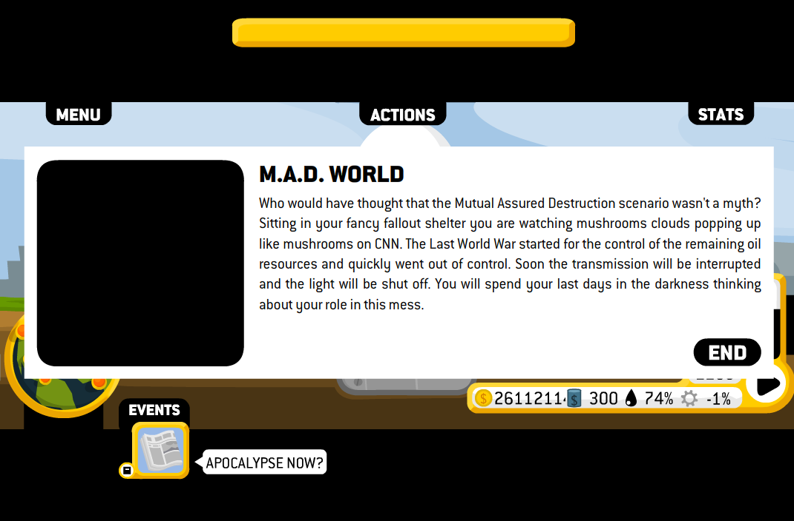

The Internet is Serious Business!
Home > Video Games > PC > Flash Games > Oiligarchy
This is a business simulation Flash game that is also very clearly a piece of social and political commentary. It places you in the role of an oil industry executive charged with expanding the company's operations throughout the world. The AddictingGames page for Oiligarchy lists its release date as 30 October 2008, and I believe I first stumbled upon and played the game soon after that date, or, at the very latest, sometime in early 2009; afterwards I probably played it a few more times in 2009, and maybe 2010. Regrettably, today I can no longer remember on which Web site I discovered the game (it was most likely either AddictingGames, Miniclip, or Kongregate), but I am at least certain that it was a large site hosting a great number and variety of Flash games, and not the game's official page.
During my first couple playthroughs of Oiligarchy, I remember that I was ignorant of a good portion of its major mechanics: the in-game tutorial was not particularly comprehensive, nor did I bother to search online for any sort of manual or walkthrough (doing so seemed to me too troublesome for a random, casual Flash game which I had only just discovered), and so at times I was left wondering about the effects of one thing, or how to accomplish another—in particular, I recall being unable to determine, during my initial playthroughs, what I had to do within the game in order to be permitted to build in the Alaska and Iraq regions. It was only by discoveries through repeated playthroughs that I gradually learned of all the game's features, including the importance of properly donating money during the game's political elections and thereby converting the U.S. government representatives, as well as the president, to pro–oil industry views, which is necessary for (among other things) unlocking Alaska and Iraq for oil drilling.
Admittedly, when I first played this game in the late 2000s I was pretty much unaware that it was attempting to convey a political message; I simply believed that I was playing a pleasant little business simulation game featuring the oil industry. I realize that some may find this difficult to believe, as the game is full of criticisms of the American oil industry and the developers made little effort to hide their political views, but I was younger and more ignorant then, and also very apolitical, my feeling in those days towards politics being one of extreme disinterest, and even antipathy. Despite this, I still found myself enjoying Oiligarchy: the developers were not so foolish as to sacrifice quality of gameplay for the sake of the social and political critique, but still managed to keep the whole thing fun, even when the political side of it is completely ignored.
Although it may have been contrary to the developers' intent, back then I considered (and even today I still consider) the goal of the game to maximize profits and keep the shareholders happy; getting fired from your executive position is an unquestionable loss, while victory is attained by keeping the oil addiction as high as possible, which, after some time, will result in the oil demand far surpassing the available oil supply, thereupon causing the price per barrel to eventually increase to $300, and ultimately resulting in the M.A.D. World ending:

But notice that I made over $26 million in that playthrough—I would hardly consider this a loss.


 All written materials on this Web site are my own, and all are released under the Do What the Fuck You Want to Public License Version 2.
All written materials on this Web site are my own, and all are released under the Do What the Fuck You Want to Public License Version 2.
This page last modified on 28 March 2021.